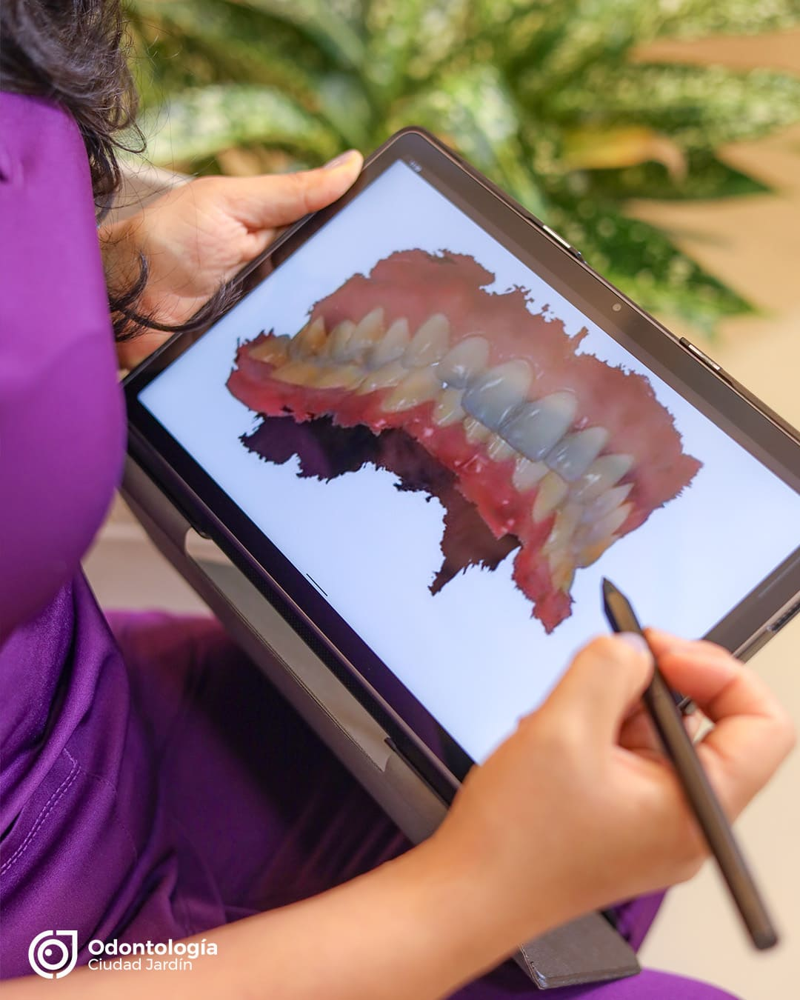
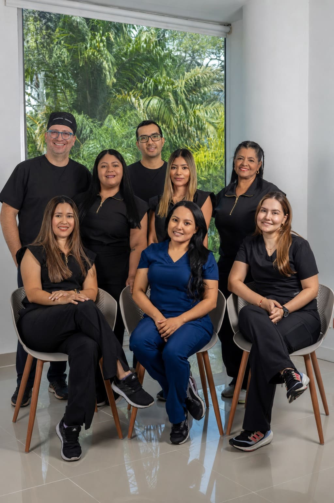
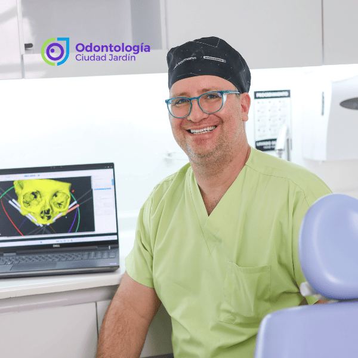
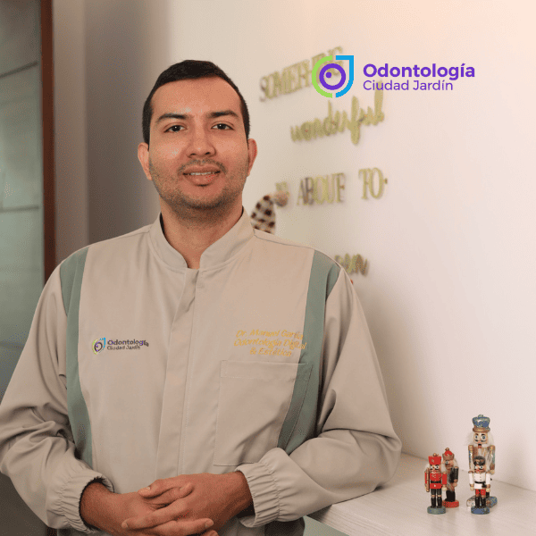
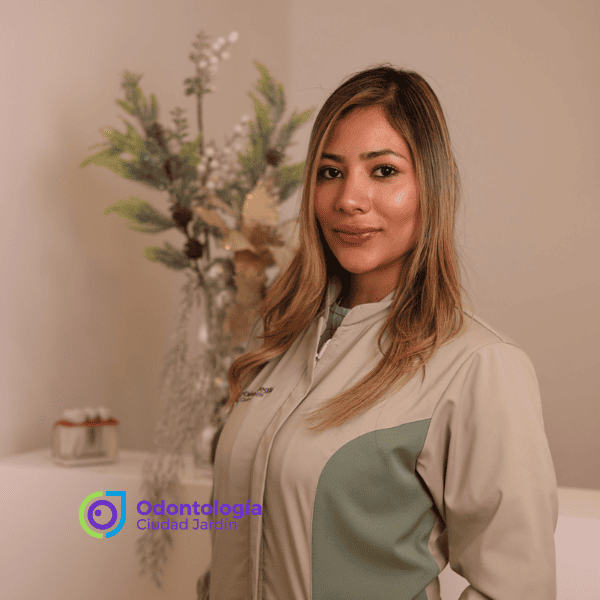
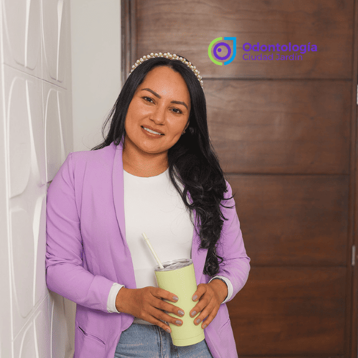

Más de 12 años dedicados a transformar sonrisas con excelencia clínica, tecnología de vanguardia y un trato profundamente humano.

Más que una clínica, somos un equipo comprometido con transformar sonrisas y vidas.
Odontología Ciudad Jardín nació en Cali en 2013, fundada por la Dra. Lorena López y el Dr. Germán Puerta con un propósito claro: transformar la odontología tradicional bajo la filosofía de "Crear una Familia". Desde el inicio, pilares fundamentales como el Dr. Santiago nos ayudaron a garantizar que cada paciente se sintiera como en casa.
A medida que crecimos, nuestro equipo se fortaleció. En 2017, la Dra. Camila se unió como odontóloga general y, gracias a su dedicación y visión, asumió el liderazgo de la clínica a partir del 2024.
Hoy hemos consolidado un equipo multidisciplinario apasionado por tu salud. Apoyados en tecnología de vanguardia y prácticas amigables con el planeta (pensamos verde), nuestro mayor orgullo es brindarte resultados clínicos de talla internacional, siempre con el cuidado de una verdadera familia.
Tecnología de última generación y protocolos internacionales.
Tratamos a cada paciente como parte de nuestra familia.
Diagnósticos honestos y presupuestos claros.
Siempre a la vanguardia en odontología digital.

Tratamientos exitosos
Años de experiencia
% Satisfacción
Un equipo multidisciplinario con amplia experiencia y vocación de servicio




Contamos con un equipo de especialistas altamente calificados, tecnología de última generación y un trato humano que marca la diferencia.
Especialistas en Periodoncia, Endodoncia, Ortodoncia, Implantes, Cirugía Maxilofacial, Rehabilitación Oral y Odontopediatría.
Transformar sonrisas y mejorar la calidad de vida de cada paciente.
Tu comodidad y experiencia positiva son nuestra prioridad.
Sonrisas naturales, funcionales y llenas de confianza.